library(tidyverse)
library(ggformula)
library(mosaic)Surprise and p-values
Setup environment
Information content
In information theory, the information content, surprisal, or Shannon information is a basic quantity derived from the probability of a particular proposition/event. It can be thought of as an alternative way of expressing probability, much like odds or log-odds, but which has particular mathematical advantages in the setting of information theory.
The Shannon information can be interpreted as quantifying the level of “surprise” of a particular outcome happening or a particular proposition being true. The more surprising the outcome/proposition, the higher the information content.
The Shannon information is closely related to entropy, which is the expected value of the information content of a random variable, quantifying how surprising the random variable is “on average”.
The information content can be expressed in various units of information, of which the most common is the “bit” (more formally called the shannon), as explained below.
Definition
The definition of Shannon information is derived from three axioms:
An event with probability 100% is perfectly unsurprising and yields no information.
The less probable an event is, the more surprising it is and the more information it yields.
If two independent events are measured separately, the total amount of information is the sum of the self-informations of the individual events.
Given a real number \(b > 1\), the information content of event/proposition \(x\) is defined as:
\[I(x) = -\log_b\bigl(P(x)\bigr) = \log_b(\frac{1}{P(x)})\]
where \(I(x)\) is the information content of the event/proposition \(x\) and \(P(x)\) is the probability of the event/proposition \(x\). The base \(b\) of the logarithm determines the unit of information. The most common base is \(b = 2\), in which case the unit of information is the “bit” (short for binary digit), a.k.a. the shannon (symbol Sh); when \(b = 10\), the unit of information is the hartley (symbol Hart).
The log-odds of an event/proposition \(x\) is defined as:
\[ \text{log-odds} = \log\left(\frac{P(x)}{P(\lnot x)}\right) = = \log\left(\frac{P(x)}{1 - P(x)}\right) \]
and can be expressed as a difference of two Shannon informations:
\[ \text{odds} = I(\lnot x) - I(x) \]
In other words, the log-odds can be interpreted as the level of surprise when the event doesn’t happen, minus the level of surprise when the event does happen.
If two events/propositions \(x\) and \(y\) are independent, the information content of the conjunction of the two events is the sum of the information content of the individual events:
\[ P(x \land y) = P(x) \cdot P(y) \]
\[ I(x \land y) = I(x) + I(y) \]
Information content and entropy
The Shannon entropy of the random variable \(X\) is defined as:
\[ H(X) = -\sum_{x \in X} p(x) \cdot \log_b(p(x)) = \sum_{x \in X} p(x) \cdot I(x) \]
where \(H(X)\) is the entropy of the random variable \(X\) and \(P(x)\) is the probability of the event/proposition \(x\).
Fair coin toss example
Consider a fair coin toss. The probability of heads is \(P(H) = 0.5\) and the probability of tails is \(P(T) = 0.5\). The information content of heads is:
\[ I(H) = -\log_2(0.5) = 1 \text{ bit} \]
Consider a series of fair coin tosses. The probability of a sequence of \(n\) heads is \(P(H^n) = 0.5^n\). The information content of a sequence of \(n\) heads is:
\[ I(H^n) = -\log_2(0.5^n) = n \text{ bits} \] The probability of getting exactly 10 heads in 10 tosses of a fair coin is:
\[ P(X = 10) = \binom{10}{10}(0.5)^{10} = 1 \times (0.5)^{10} = \frac{1}{1024} \approx 0.00098 \] So, the p-value is approximately \(0.00098\) for a one-tailed test or \(2 \times 0.00098 = 0.00195\) for a two-tailed test.
P-values and surprise
Rafi and Greenland (2020) discuss the concept of surprise in the context of p-values. They argue that the p-value is a measure of surprise, and that the p-value is the probability of observing data as extreme as the observed data, given that the null hypothesis is true.
We use the Shannon transform of the P-value \(p\), also known as the binary surprisal or S-value \(s = −log2(p)\), to provide a measure of the information supplied by the testing procedure.
The S-value is a measure of the information (number of bits) provided by the test.
The S-value is a measure of the surprise of the data given the null hypothesis.
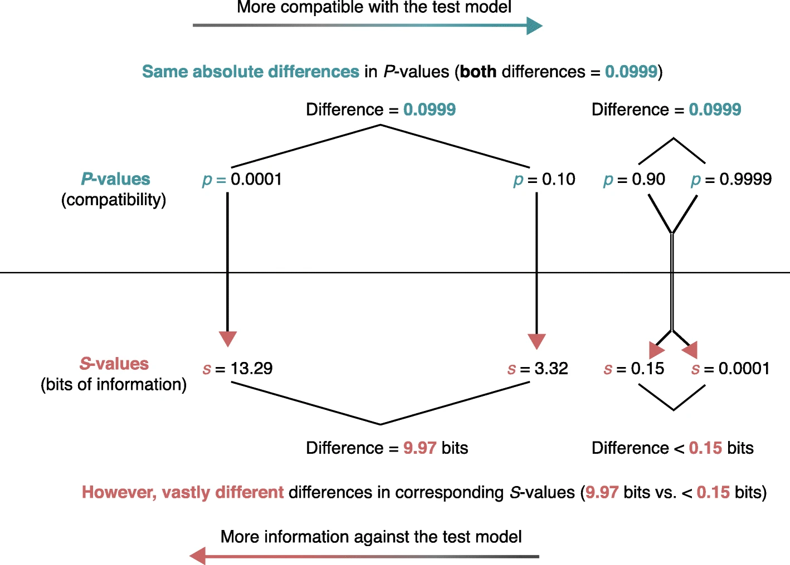
Compatibility (or confidence or surprisal) curves
https://stat.lesslikely.com/concurve/
library(concurve)Please see the documentation on https://data.lesslikely.com/concurve/ or by typing `help(concurve)`Simple exampls in R
https://stat.lesslikely.com/concurve/articles/examples.html

Comparison to Bayesian posteriors
https://stat.lesslikely.com/concurve/articles/bayes.html
sim <- function() {
fake <- data.frame((x <- rnorm(100, 100, 20)), (y <- rnorm(100, 80, 20)))
intervals <- t.test(x = x, y = y, data = fake, conf.level = .95)$conf.int[]
}
set.seed(1031)
z <- replicate(100, sim(), simplify = FALSE)
df <- data.frame(do.call(rbind, z))
df$studynumber <- (1:length(z))
intrvl.limit <- c("lower.limit", "upper.limit", "studynumber")
colnames(df) <- intrvl.limit
df$point <- ((df$lower.limit + df$upper.limit) / 2)
df$covered <- (df$lower.limit <= 20 & 20 <= df$upper.limit)
df$coverageprob <- ((as.numeric(table(df$covered)[2]) / nrow(df) * 100))
library(ggplot2)
ggplot(data = df, aes(x = studynumber, y = point, ymin = lower.limit, ymax = upper.limit)) +
geom_pointrange(mapping = aes(color = covered), size = .40) +
geom_hline(yintercept = 20, lty = 1, color = "red", alpha = 0.5) +
coord_flip() +
labs(
title = "Simulated 95% Intervals",
x = "Study Number",
y = "Estimate",
subtitle = "Population Parameter is 20"
) +
theme_bw() + # use a white background
theme(legend.position = "none") +
annotate(
geom = "text", x = 102, y = 30,
label = "Coverage (%) =", size = 2.5, color = "black"
) +
annotate(
geom = "text", x = 102, y = 35,
label = df$coverageprob, size = 2.5, color = "black"
)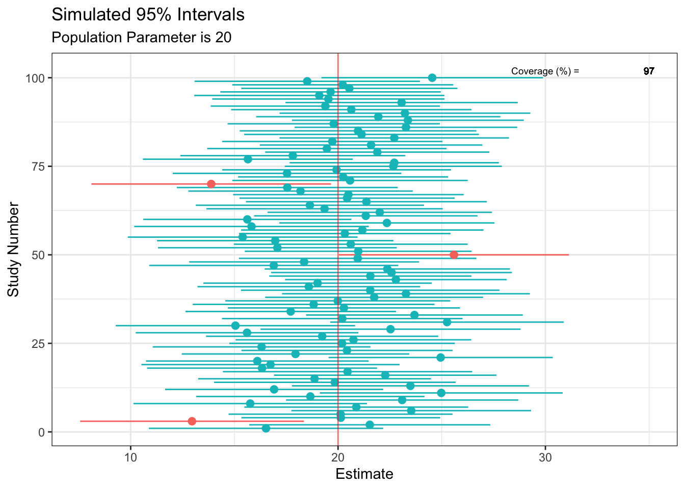
library(concurve)
#> Please see the documentation on https://data.lesslikely.com/concurve/ or by typing `help(concurve)`
library(rstan)Loading required package: StanHeaders
rstan version 2.35.0.9000 (Stan version 2.35.0)For execution on a local, multicore CPU with excess RAM we recommend calling
options(mc.cores = parallel::detectCores()).
To avoid recompilation of unchanged Stan programs, we recommend calling
rstan_options(auto_write = TRUE)
For within-chain threading using `reduce_sum()` or `map_rect()` Stan functions,
change `threads_per_chain` option:
rstan_options(threads_per_chain = 1)
Attaching package: 'rstan'The following object is masked from 'package:tidyr':
extract#> Loading required package: StanHeaders
#> rstan (Version 2.21.2, GitRev: 2e1f913d3ca3)
#> For execution on a local, multicore CPU with excess RAM we recommend calling
#> options(mc.cores = parallel::detectCores()).
#> To avoid recompilation of unchanged Stan programs, we recommend calling
#> rstan_options(auto_write = TRUE)
library(rstanarm)Loading required package: RcppThis is rstanarm version 2.32.1- See https://mc-stan.org/rstanarm/articles/priors for changes to default priors!- Default priors may change, so it's safest to specify priors, even if equivalent to the defaults.- For execution on a local, multicore CPU with excess RAM we recommend calling options(mc.cores = parallel::detectCores())
Attaching package: 'rstanarm'The following object is masked from 'package:rstan':
looThe following object is masked from 'package:mosaic':
logit#> Loading required package: Rcpp
#> Registered S3 methods overwritten by 'lme4':
#> method from
#> cooks.distance.influence.merMod car
#> influence.merMod car
#> dfbeta.influence.merMod car
#> dfbetas.influence.merMod car
#> This is rstanarm version 2.21.1
#> - See https://mc-stan.org/rstanarm/articles/priors for changes to default priors!
#> - Default priors may change, so it's safest to specify priors, even if equivalent to the defaults.
#> - For execution on a local, multicore CPU with excess RAM we recommend calling
#> options(mc.cores = parallel::detectCores())
#>
#> Attaching package: 'rstanarm'
#> The following object is masked from 'package:rstan':
#>
#> loo
library(ggplot2)
library(cowplot)
Attaching package: 'cowplot'The following object is masked from 'package:mosaic':
theme_mapThe following object is masked from 'package:lubridate':
stamplibrary(bayesplot)This is bayesplot version 1.11.1- Online documentation and vignettes at mc-stan.org/bayesplot- bayesplot theme set to bayesplot::theme_default() * Does _not_ affect other ggplot2 plots * See ?bayesplot_theme_set for details on theme setting#> This is bayesplot version 1.7.2
#> - Online documentation and vignettes at mc-stan.org/bayesplot
#> - bayesplot theme set to bayesplot::theme_default()
#> * Does _not_ affect other ggplot2 plots
#> * See ?bayesplot_theme_set for details on theme setting
library(scales)GroupA <- rnorm(50)
GroupB <- rnorm(50)
RandomData <- data.frame(GroupA, GroupB)
model_freq <- lm(GroupA ~ GroupB, data = RandomData)
rstan_options(auto_write = TRUE)
# Using flat prior
model_bayes <- stan_lm(GroupA ~ GroupB,
data = RandomData, prior = NULL,
iter = 5000, warmup = 1000, chains = 4
)
SAMPLING FOR MODEL 'lm' NOW (CHAIN 1).
Chain 1:
Chain 1: Gradient evaluation took 1.7e-05 seconds
Chain 1: 1000 transitions using 10 leapfrog steps per transition would take 0.17 seconds.
Chain 1: Adjust your expectations accordingly!
Chain 1:
Chain 1:
Chain 1: Iteration: 1 / 5000 [ 0%] (Warmup)
Chain 1: Iteration: 500 / 5000 [ 10%] (Warmup)
Chain 1: Iteration: 1000 / 5000 [ 20%] (Warmup)
Chain 1: Iteration: 1001 / 5000 [ 20%] (Sampling)
Chain 1: Iteration: 1500 / 5000 [ 30%] (Sampling)
Chain 1: Iteration: 2000 / 5000 [ 40%] (Sampling)
Chain 1: Iteration: 2500 / 5000 [ 50%] (Sampling)
Chain 1: Iteration: 3000 / 5000 [ 60%] (Sampling)
Chain 1: Iteration: 3500 / 5000 [ 70%] (Sampling)
Chain 1: Iteration: 4000 / 5000 [ 80%] (Sampling)
Chain 1: Iteration: 4500 / 5000 [ 90%] (Sampling)
Chain 1: Iteration: 5000 / 5000 [100%] (Sampling)
Chain 1:
Chain 1: Elapsed Time: 0.011 seconds (Warm-up)
Chain 1: 0.052 seconds (Sampling)
Chain 1: 0.063 seconds (Total)
Chain 1:
SAMPLING FOR MODEL 'lm' NOW (CHAIN 2).
Chain 2:
Chain 2: Gradient evaluation took 2e-06 seconds
Chain 2: 1000 transitions using 10 leapfrog steps per transition would take 0.02 seconds.
Chain 2: Adjust your expectations accordingly!
Chain 2:
Chain 2:
Chain 2: Iteration: 1 / 5000 [ 0%] (Warmup)
Chain 2: Iteration: 500 / 5000 [ 10%] (Warmup)
Chain 2: Iteration: 1000 / 5000 [ 20%] (Warmup)
Chain 2: Iteration: 1001 / 5000 [ 20%] (Sampling)
Chain 2: Iteration: 1500 / 5000 [ 30%] (Sampling)
Chain 2: Iteration: 2000 / 5000 [ 40%] (Sampling)
Chain 2: Iteration: 2500 / 5000 [ 50%] (Sampling)
Chain 2: Iteration: 3000 / 5000 [ 60%] (Sampling)
Chain 2: Iteration: 3500 / 5000 [ 70%] (Sampling)
Chain 2: Iteration: 4000 / 5000 [ 80%] (Sampling)
Chain 2: Iteration: 4500 / 5000 [ 90%] (Sampling)
Chain 2: Iteration: 5000 / 5000 [100%] (Sampling)
Chain 2:
Chain 2: Elapsed Time: 0.011 seconds (Warm-up)
Chain 2: 0.051 seconds (Sampling)
Chain 2: 0.062 seconds (Total)
Chain 2:
SAMPLING FOR MODEL 'lm' NOW (CHAIN 3).
Chain 3:
Chain 3: Gradient evaluation took 2e-06 seconds
Chain 3: 1000 transitions using 10 leapfrog steps per transition would take 0.02 seconds.
Chain 3: Adjust your expectations accordingly!
Chain 3:
Chain 3:
Chain 3: Iteration: 1 / 5000 [ 0%] (Warmup)
Chain 3: Iteration: 500 / 5000 [ 10%] (Warmup)
Chain 3: Iteration: 1000 / 5000 [ 20%] (Warmup)
Chain 3: Iteration: 1001 / 5000 [ 20%] (Sampling)
Chain 3: Iteration: 1500 / 5000 [ 30%] (Sampling)
Chain 3: Iteration: 2000 / 5000 [ 40%] (Sampling)
Chain 3: Iteration: 2500 / 5000 [ 50%] (Sampling)
Chain 3: Iteration: 3000 / 5000 [ 60%] (Sampling)
Chain 3: Iteration: 3500 / 5000 [ 70%] (Sampling)
Chain 3: Iteration: 4000 / 5000 [ 80%] (Sampling)
Chain 3: Iteration: 4500 / 5000 [ 90%] (Sampling)
Chain 3: Iteration: 5000 / 5000 [100%] (Sampling)
Chain 3:
Chain 3: Elapsed Time: 0.011 seconds (Warm-up)
Chain 3: 0.045 seconds (Sampling)
Chain 3: 0.056 seconds (Total)
Chain 3:
SAMPLING FOR MODEL 'lm' NOW (CHAIN 4).
Chain 4:
Chain 4: Gradient evaluation took 2e-06 seconds
Chain 4: 1000 transitions using 10 leapfrog steps per transition would take 0.02 seconds.
Chain 4: Adjust your expectations accordingly!
Chain 4:
Chain 4:
Chain 4: Iteration: 1 / 5000 [ 0%] (Warmup)
Chain 4: Iteration: 500 / 5000 [ 10%] (Warmup)
Chain 4: Iteration: 1000 / 5000 [ 20%] (Warmup)
Chain 4: Iteration: 1001 / 5000 [ 20%] (Sampling)
Chain 4: Iteration: 1500 / 5000 [ 30%] (Sampling)
Chain 4: Iteration: 2000 / 5000 [ 40%] (Sampling)
Chain 4: Iteration: 2500 / 5000 [ 50%] (Sampling)
Chain 4: Iteration: 3000 / 5000 [ 60%] (Sampling)
Chain 4: Iteration: 3500 / 5000 [ 70%] (Sampling)
Chain 4: Iteration: 4000 / 5000 [ 80%] (Sampling)
Chain 4: Iteration: 4500 / 5000 [ 90%] (Sampling)
Chain 4: Iteration: 5000 / 5000 [100%] (Sampling)
Chain 4:
Chain 4: Elapsed Time: 0.012 seconds (Warm-up)
Chain 4: 0.052 seconds (Sampling)
Chain 4: 0.064 seconds (Total)
Chain 4: randomframe <- curve_gen(model_freq, "GroupB", steps = 10000)
(function1 <- ggcurve(type = "c", randomframe[[1]], nullvalue = TRUE))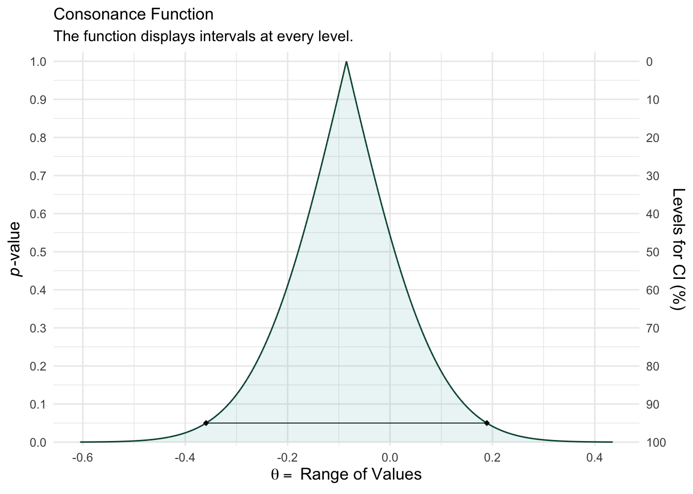
color_scheme_set("teal")
function2 <- mcmc_dens(model_bayes, pars = "GroupB") +
ggtitle("Posterior Distribution") +
labs(subtitle = "Function Displays the Full Posterior Distribution", x = "Range of Values", y = "Posterior Probability") +
scale_y_continuous(breaks = c(0, 0.30, 0.60, 0.90, 1.20, 1.50, 1.80, 2.10, 2.40, 2.70, 3.0))Scale for y is already present.
Adding another scale for y, which will replace the existing scale.#> Scale for 'y' is already present. Adding another scale for 'y', which will
#> replace the existing scale.
(breaks1 <- c(0, 0.30, 0.60, 0.90, 1.20, 1.50, 1.80, 2.10, 2.40, 2.70, 3.0)) [1] 0.0 0.3 0.6 0.9 1.2 1.5 1.8 2.1 2.4 2.7 3.0#> [1] 0.0 0.3 0.6 0.9 1.2 1.5 1.8 2.1 2.4 2.7 3.0
(adjustment <- function(x) {
x / 3
})function (x)
{
x/3
}#> function(x) {
#> x / 3
#> }
(labels <- adjustment(breaks1)) [1] 0.0 0.1 0.2 0.3 0.4 0.5 0.6 0.7 0.8 0.9 1.0#> [1] 0.0 0.1 0.2 0.3 0.4 0.5 0.6 0.7 0.8 0.9 1.0
breaks <- labels
labels1 <- labels
(function3 <- mcmc_dens(model_bayes, pars = "GroupB") +
ggtitle("Posterior Distribution") +
labs(subtitle = "Function Displays the Full Posterior Distribution", x = "Range of Values", y = "Posterior Probability") +
scale_x_continuous(expand = c(0, 0), breaks = scales::pretty_breaks(n = 10)) +
scale_y_continuous(expand = c(0, 0), breaks = waiver(), labels = waiver(), n.breaks = 10, limits = c(0, 3.25)) +
yaxis_text(on = TRUE) +
yaxis_ticks(on = TRUE) +
annotate("segment",
x = 0, xend = 0, y = 0, yend = 3,
color = "#990000", alpha = 0.4, size = .75, linetype = 3
))Scale for x is already present.
Adding another scale for x, which will replace the existing scale.
Scale for y is already present.
Adding another scale for y, which will replace the existing scale.Warning: Using `size` aesthetic for lines was deprecated in ggplot2 3.4.0.
ℹ Please use `linewidth` instead.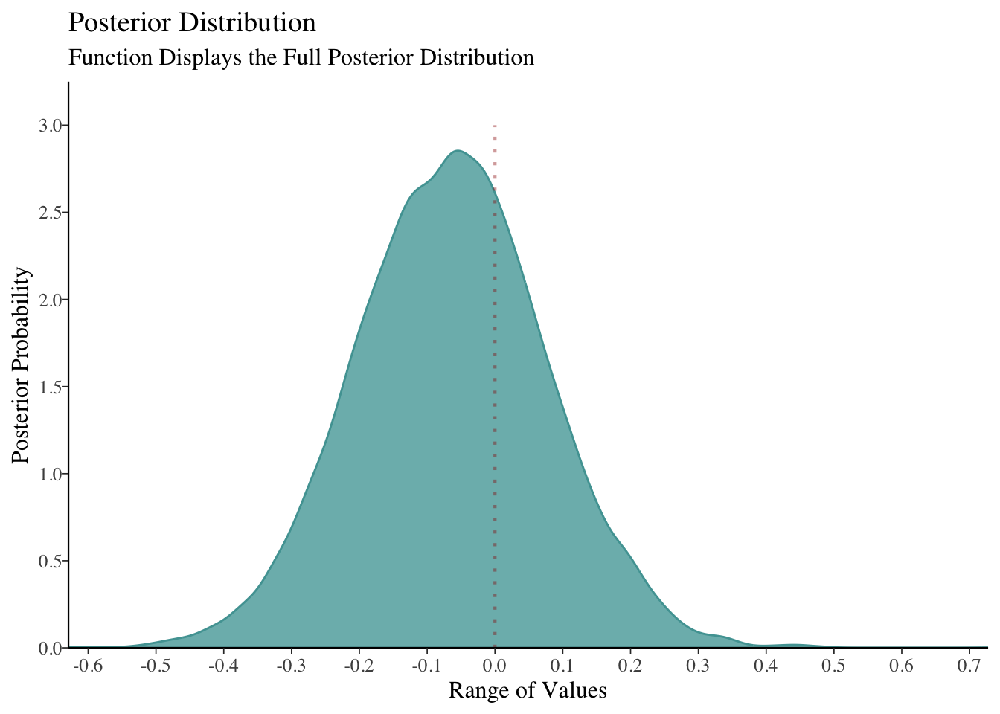
#> Scale for 'x' is already present. Adding another scale for 'x', which will
#> replace the existing scale.
#> Scale for 'y' is already present. Adding another scale for 'y', which will
#> replace the existing scale.plot_grid(function1, function3, ncol = 1, align = "v")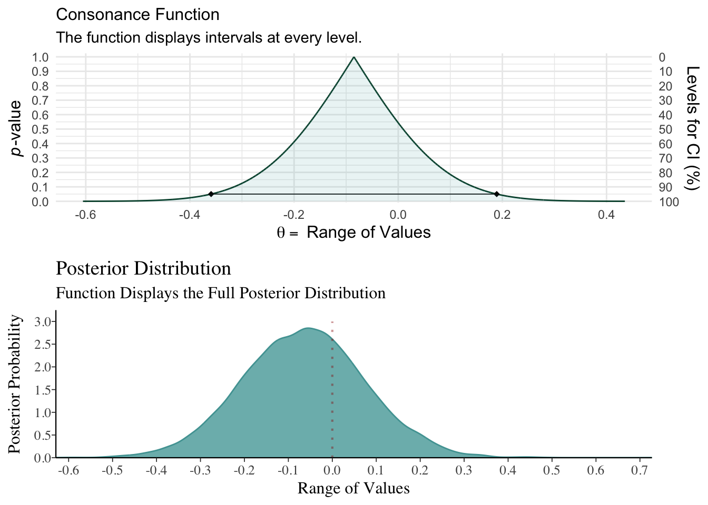
GroupA <- rnorm(500, mean = 2)
GroupB <- rnorm(500, mean = 1)
RandomData <- data.frame(GroupA, GroupB)
model_freq <- lm(GroupA ~ GroupB, data = RandomData)
# Using flat prior
model_bayes <- stan_lm(GroupA ~ GroupB,
data = RandomData, prior = NULL,
iter = 5000, warmup = 1000, chains = 4
)
SAMPLING FOR MODEL 'lm' NOW (CHAIN 1).
Chain 1:
Chain 1: Gradient evaluation took 9e-06 seconds
Chain 1: 1000 transitions using 10 leapfrog steps per transition would take 0.09 seconds.
Chain 1: Adjust your expectations accordingly!
Chain 1:
Chain 1:
Chain 1: Iteration: 1 / 5000 [ 0%] (Warmup)
Chain 1: Iteration: 500 / 5000 [ 10%] (Warmup)
Chain 1: Iteration: 1000 / 5000 [ 20%] (Warmup)
Chain 1: Iteration: 1001 / 5000 [ 20%] (Sampling)
Chain 1: Iteration: 1500 / 5000 [ 30%] (Sampling)
Chain 1: Iteration: 2000 / 5000 [ 40%] (Sampling)
Chain 1: Iteration: 2500 / 5000 [ 50%] (Sampling)
Chain 1: Iteration: 3000 / 5000 [ 60%] (Sampling)
Chain 1: Iteration: 3500 / 5000 [ 70%] (Sampling)
Chain 1: Iteration: 4000 / 5000 [ 80%] (Sampling)
Chain 1: Iteration: 4500 / 5000 [ 90%] (Sampling)
Chain 1: Iteration: 5000 / 5000 [100%] (Sampling)
Chain 1:
Chain 1: Elapsed Time: 0.012 seconds (Warm-up)
Chain 1: 0.059 seconds (Sampling)
Chain 1: 0.071 seconds (Total)
Chain 1:
SAMPLING FOR MODEL 'lm' NOW (CHAIN 2).
Chain 2:
Chain 2: Gradient evaluation took 4e-06 seconds
Chain 2: 1000 transitions using 10 leapfrog steps per transition would take 0.04 seconds.
Chain 2: Adjust your expectations accordingly!
Chain 2:
Chain 2:
Chain 2: Iteration: 1 / 5000 [ 0%] (Warmup)
Chain 2: Iteration: 500 / 5000 [ 10%] (Warmup)
Chain 2: Iteration: 1000 / 5000 [ 20%] (Warmup)
Chain 2: Iteration: 1001 / 5000 [ 20%] (Sampling)
Chain 2: Iteration: 1500 / 5000 [ 30%] (Sampling)
Chain 2: Iteration: 2000 / 5000 [ 40%] (Sampling)
Chain 2: Iteration: 2500 / 5000 [ 50%] (Sampling)
Chain 2: Iteration: 3000 / 5000 [ 60%] (Sampling)
Chain 2: Iteration: 3500 / 5000 [ 70%] (Sampling)
Chain 2: Iteration: 4000 / 5000 [ 80%] (Sampling)
Chain 2: Iteration: 4500 / 5000 [ 90%] (Sampling)
Chain 2: Iteration: 5000 / 5000 [100%] (Sampling)
Chain 2:
Chain 2: Elapsed Time: 0.013 seconds (Warm-up)
Chain 2: 0.051 seconds (Sampling)
Chain 2: 0.064 seconds (Total)
Chain 2:
SAMPLING FOR MODEL 'lm' NOW (CHAIN 3).
Chain 3:
Chain 3: Gradient evaluation took 3e-06 seconds
Chain 3: 1000 transitions using 10 leapfrog steps per transition would take 0.03 seconds.
Chain 3: Adjust your expectations accordingly!
Chain 3:
Chain 3:
Chain 3: Iteration: 1 / 5000 [ 0%] (Warmup)
Chain 3: Iteration: 500 / 5000 [ 10%] (Warmup)
Chain 3: Iteration: 1000 / 5000 [ 20%] (Warmup)
Chain 3: Iteration: 1001 / 5000 [ 20%] (Sampling)
Chain 3: Iteration: 1500 / 5000 [ 30%] (Sampling)
Chain 3: Iteration: 2000 / 5000 [ 40%] (Sampling)
Chain 3: Iteration: 2500 / 5000 [ 50%] (Sampling)
Chain 3: Iteration: 3000 / 5000 [ 60%] (Sampling)
Chain 3: Iteration: 3500 / 5000 [ 70%] (Sampling)
Chain 3: Iteration: 4000 / 5000 [ 80%] (Sampling)
Chain 3: Iteration: 4500 / 5000 [ 90%] (Sampling)
Chain 3: Iteration: 5000 / 5000 [100%] (Sampling)
Chain 3:
Chain 3: Elapsed Time: 0.012 seconds (Warm-up)
Chain 3: 0.053 seconds (Sampling)
Chain 3: 0.065 seconds (Total)
Chain 3:
SAMPLING FOR MODEL 'lm' NOW (CHAIN 4).
Chain 4:
Chain 4: Gradient evaluation took 2e-06 seconds
Chain 4: 1000 transitions using 10 leapfrog steps per transition would take 0.02 seconds.
Chain 4: Adjust your expectations accordingly!
Chain 4:
Chain 4:
Chain 4: Iteration: 1 / 5000 [ 0%] (Warmup)
Chain 4: Iteration: 500 / 5000 [ 10%] (Warmup)
Chain 4: Iteration: 1000 / 5000 [ 20%] (Warmup)
Chain 4: Iteration: 1001 / 5000 [ 20%] (Sampling)
Chain 4: Iteration: 1500 / 5000 [ 30%] (Sampling)
Chain 4: Iteration: 2000 / 5000 [ 40%] (Sampling)
Chain 4: Iteration: 2500 / 5000 [ 50%] (Sampling)
Chain 4: Iteration: 3000 / 5000 [ 60%] (Sampling)
Chain 4: Iteration: 3500 / 5000 [ 70%] (Sampling)
Chain 4: Iteration: 4000 / 5000 [ 80%] (Sampling)
Chain 4: Iteration: 4500 / 5000 [ 90%] (Sampling)
Chain 4: Iteration: 5000 / 5000 [100%] (Sampling)
Chain 4:
Chain 4: Elapsed Time: 0.012 seconds (Warm-up)
Chain 4: 0.054 seconds (Sampling)
Chain 4: 0.066 seconds (Total)
Chain 4: randomframe <- curve_gen(model_freq, "GroupB", steps = 10000)
(function1 <- ggcurve(type = "c", randomframe[[1]], nullvalue = TRUE))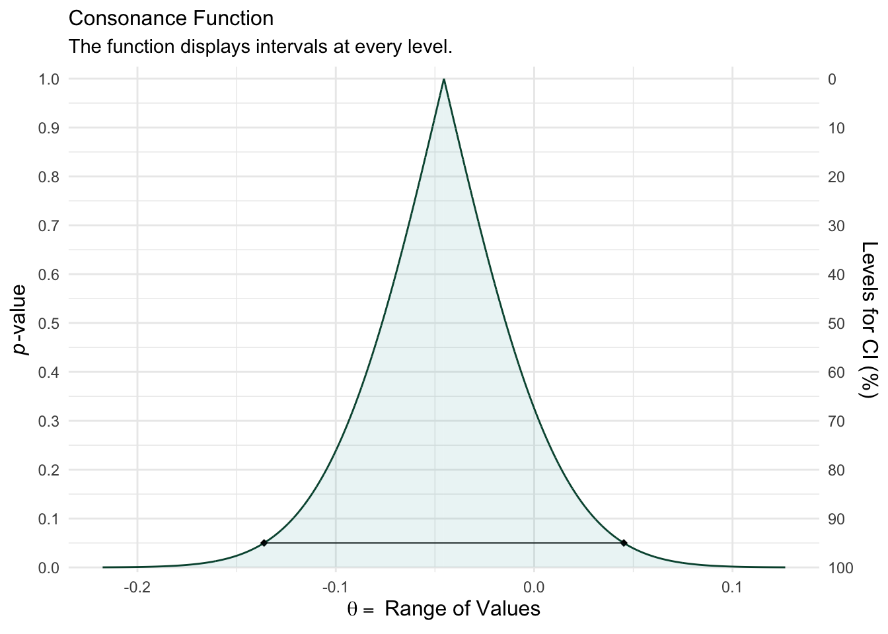
color_scheme_set("teal")
function2 <- mcmc_dens(model_bayes, pars = "GroupB") +
ggtitle("Posterior Distribution") +
labs(subtitle = "Function Displays the Full Posterior Distribution", x = "Range of Values", y = "Posterior Probability") +
scale_y_continuous(breaks = c(0, 0.30, 0.60, 0.90, 1.20, 1.50, 1.80, 2.10, 2.40, 2.70, 3.0))Scale for y is already present.
Adding another scale for y, which will replace the existing scale.#> Scale for 'y' is already present. Adding another scale for 'y', which will
#> replace the existing scale.
(breaks1 <- c(0, 0.30, 0.60, 0.90, 1.20, 1.50, 1.80, 2.10, 2.40, 2.70, 3.0)) [1] 0.0 0.3 0.6 0.9 1.2 1.5 1.8 2.1 2.4 2.7 3.0#> [1] 0.0 0.3 0.6 0.9 1.2 1.5 1.8 2.1 2.4 2.7 3.0
(adjustment <- function(x) {
x / 3
})function (x)
{
x/3
}#> function(x) {
#> x / 3
#> }
(labels <- adjustment(breaks1)) [1] 0.0 0.1 0.2 0.3 0.4 0.5 0.6 0.7 0.8 0.9 1.0#> [1] 0.0 0.1 0.2 0.3 0.4 0.5 0.6 0.7 0.8 0.9 1.0
breaks <- labels
labels1 <- labels
(function3 <- mcmc_dens(model_bayes, pars = "GroupB") +
ggtitle("Posterior Distribution") +
labs(subtitle = "Function Displays the Full Posterior Distribution", x = "Range of Values", y = "Posterior Probability") +
scale_x_continuous(expand = c(0, 0), breaks = scales::pretty_breaks(n = 10)) +
scale_y_continuous(expand = c(0, 0), breaks = waiver(), labels = waiver(), n.breaks = 10, limits = c(0, 9)) +
yaxis_text(on = TRUE) +
yaxis_ticks(on = TRUE) +
annotate("segment",
x = 0, xend = 0, y = 0, yend = 9,
color = "#990000", alpha = 0.4, size = .75, linetype = 3
))Scale for x is already present.
Adding another scale for x, which will replace the existing scale.
Scale for y is already present.
Adding another scale for y, which will replace the existing scale.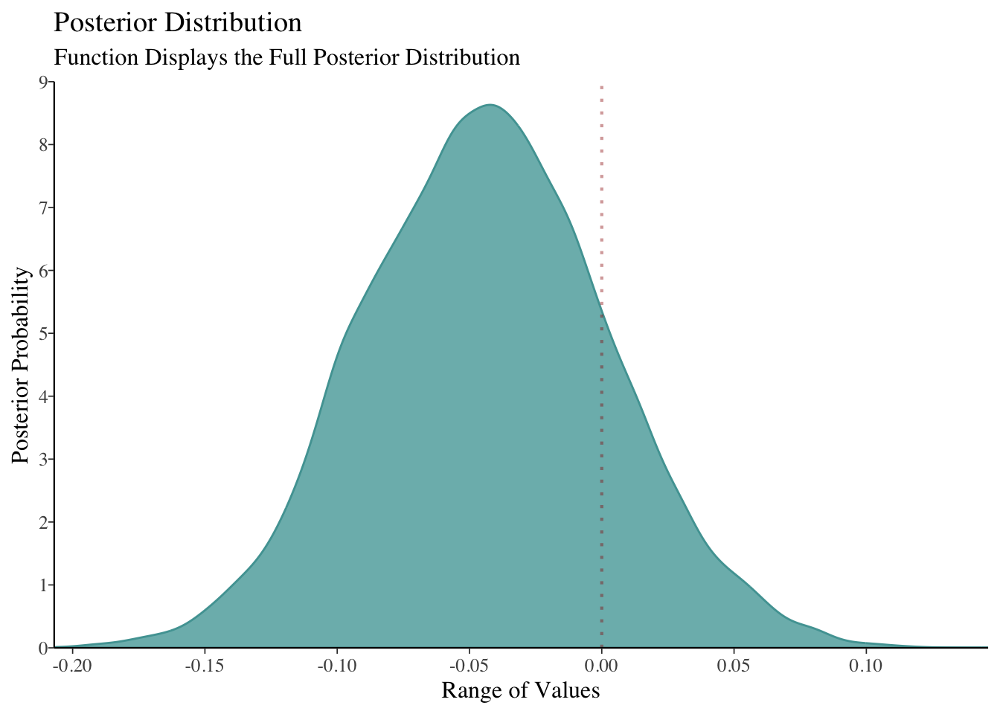
#> Scale for 'x' is already present. Adding another scale for 'x', which will
#> replace the existing scale.
#> Scale for 'y' is already present. Adding another scale for 'y', which will
#> replace the existing scale.plot_grid(function1, function3, ncol = 1, align = "v")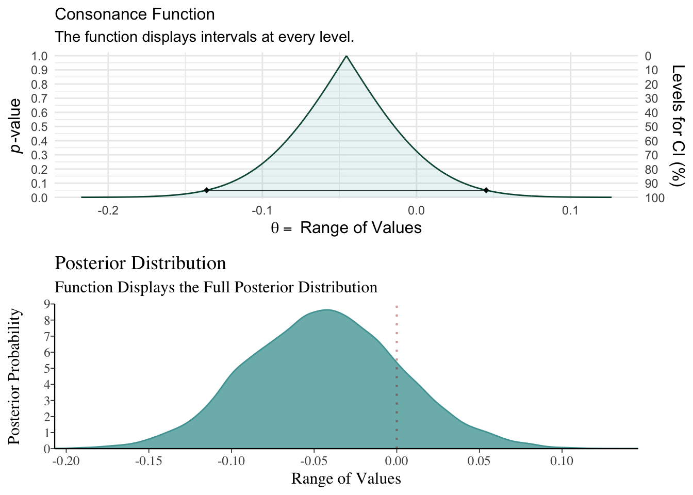
data(kidiq)
# flat prior
post1 <- stan_lm(kid_score ~ mom_hs,
data = kidiq, prior = NULL,
seed = 12345
)
SAMPLING FOR MODEL 'lm' NOW (CHAIN 1).
Chain 1:
Chain 1: Gradient evaluation took 5e-06 seconds
Chain 1: 1000 transitions using 10 leapfrog steps per transition would take 0.05 seconds.
Chain 1: Adjust your expectations accordingly!
Chain 1:
Chain 1:
Chain 1: Iteration: 1 / 2000 [ 0%] (Warmup)
Chain 1: Iteration: 200 / 2000 [ 10%] (Warmup)
Chain 1: Iteration: 400 / 2000 [ 20%] (Warmup)
Chain 1: Iteration: 600 / 2000 [ 30%] (Warmup)
Chain 1: Iteration: 800 / 2000 [ 40%] (Warmup)
Chain 1: Iteration: 1000 / 2000 [ 50%] (Warmup)
Chain 1: Iteration: 1001 / 2000 [ 50%] (Sampling)
Chain 1: Iteration: 1200 / 2000 [ 60%] (Sampling)
Chain 1: Iteration: 1400 / 2000 [ 70%] (Sampling)
Chain 1: Iteration: 1600 / 2000 [ 80%] (Sampling)
Chain 1: Iteration: 1800 / 2000 [ 90%] (Sampling)
Chain 1: Iteration: 2000 / 2000 [100%] (Sampling)
Chain 1:
Chain 1: Elapsed Time: 0.027 seconds (Warm-up)
Chain 1: 0.021 seconds (Sampling)
Chain 1: 0.048 seconds (Total)
Chain 1:
SAMPLING FOR MODEL 'lm' NOW (CHAIN 2).
Chain 2:
Chain 2: Gradient evaluation took 2e-06 seconds
Chain 2: 1000 transitions using 10 leapfrog steps per transition would take 0.02 seconds.
Chain 2: Adjust your expectations accordingly!
Chain 2:
Chain 2:
Chain 2: Iteration: 1 / 2000 [ 0%] (Warmup)
Chain 2: Iteration: 200 / 2000 [ 10%] (Warmup)
Chain 2: Iteration: 400 / 2000 [ 20%] (Warmup)
Chain 2: Iteration: 600 / 2000 [ 30%] (Warmup)
Chain 2: Iteration: 800 / 2000 [ 40%] (Warmup)
Chain 2: Iteration: 1000 / 2000 [ 50%] (Warmup)
Chain 2: Iteration: 1001 / 2000 [ 50%] (Sampling)
Chain 2: Iteration: 1200 / 2000 [ 60%] (Sampling)
Chain 2: Iteration: 1400 / 2000 [ 70%] (Sampling)
Chain 2: Iteration: 1600 / 2000 [ 80%] (Sampling)
Chain 2: Iteration: 1800 / 2000 [ 90%] (Sampling)
Chain 2: Iteration: 2000 / 2000 [100%] (Sampling)
Chain 2:
Chain 2: Elapsed Time: 0.024 seconds (Warm-up)
Chain 2: 0.019 seconds (Sampling)
Chain 2: 0.043 seconds (Total)
Chain 2:
SAMPLING FOR MODEL 'lm' NOW (CHAIN 3).
Chain 3:
Chain 3: Gradient evaluation took 2e-06 seconds
Chain 3: 1000 transitions using 10 leapfrog steps per transition would take 0.02 seconds.
Chain 3: Adjust your expectations accordingly!
Chain 3:
Chain 3:
Chain 3: Iteration: 1 / 2000 [ 0%] (Warmup)
Chain 3: Iteration: 200 / 2000 [ 10%] (Warmup)
Chain 3: Iteration: 400 / 2000 [ 20%] (Warmup)
Chain 3: Iteration: 600 / 2000 [ 30%] (Warmup)
Chain 3: Iteration: 800 / 2000 [ 40%] (Warmup)
Chain 3: Iteration: 1000 / 2000 [ 50%] (Warmup)
Chain 3: Iteration: 1001 / 2000 [ 50%] (Sampling)
Chain 3: Iteration: 1200 / 2000 [ 60%] (Sampling)
Chain 3: Iteration: 1400 / 2000 [ 70%] (Sampling)
Chain 3: Iteration: 1600 / 2000 [ 80%] (Sampling)
Chain 3: Iteration: 1800 / 2000 [ 90%] (Sampling)
Chain 3: Iteration: 2000 / 2000 [100%] (Sampling)
Chain 3:
Chain 3: Elapsed Time: 0.025 seconds (Warm-up)
Chain 3: 0.02 seconds (Sampling)
Chain 3: 0.045 seconds (Total)
Chain 3:
SAMPLING FOR MODEL 'lm' NOW (CHAIN 4).
Chain 4:
Chain 4: Gradient evaluation took 1e-06 seconds
Chain 4: 1000 transitions using 10 leapfrog steps per transition would take 0.01 seconds.
Chain 4: Adjust your expectations accordingly!
Chain 4:
Chain 4:
Chain 4: Iteration: 1 / 2000 [ 0%] (Warmup)
Chain 4: Iteration: 200 / 2000 [ 10%] (Warmup)
Chain 4: Iteration: 400 / 2000 [ 20%] (Warmup)
Chain 4: Iteration: 600 / 2000 [ 30%] (Warmup)
Chain 4: Iteration: 800 / 2000 [ 40%] (Warmup)
Chain 4: Iteration: 1000 / 2000 [ 50%] (Warmup)
Chain 4: Iteration: 1001 / 2000 [ 50%] (Sampling)
Chain 4: Iteration: 1200 / 2000 [ 60%] (Sampling)
Chain 4: Iteration: 1400 / 2000 [ 70%] (Sampling)
Chain 4: Iteration: 1600 / 2000 [ 80%] (Sampling)
Chain 4: Iteration: 1800 / 2000 [ 90%] (Sampling)
Chain 4: Iteration: 2000 / 2000 [100%] (Sampling)
Chain 4:
Chain 4: Elapsed Time: 0.024 seconds (Warm-up)
Chain 4: 0.019 seconds (Sampling)
Chain 4: 0.043 seconds (Total)
Chain 4: post2 <- lm(kid_score ~ mom_hs, data = kidiq)
df3 <- curve_gen(post2, "mom_hs")
(function99 <- ggcurve(df3[[1]]))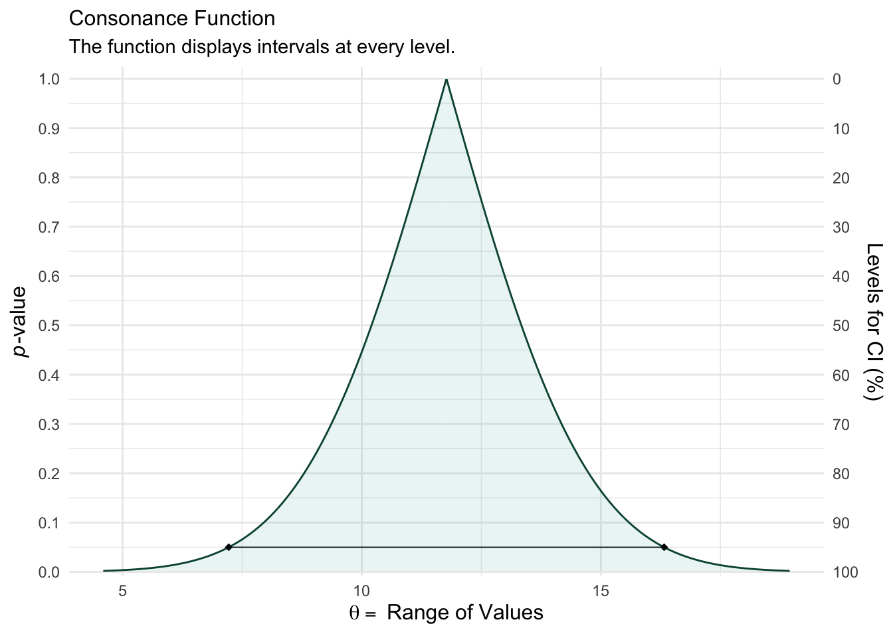
summary(post1)
Model Info:
function: stan_lm
family: gaussian [identity]
formula: kid_score ~ mom_hs
algorithm: sampling
sample: 4000 (posterior sample size)
priors: see help('prior_summary')
observations: 434
predictors: 2
Estimates:
mean sd 10% 50% 90%
(Intercept) 77.4 2.1 74.8 77.4 80.0
mom_hs 12.0 2.3 9.0 12.0 14.9
sigma 19.9 0.7 19.0 19.8 20.7
log-fit_ratio -0.2 0.0 -0.2 -0.2 -0.1
R2 0.1 0.0 0.0 0.1 0.1
Fit Diagnostics:
mean sd 10% 50% 90%
mean_PPD 86.8 1.3 85.1 86.8 88.5
The mean_ppd is the sample average posterior predictive distribution of the outcome variable (for details see help('summary.stanreg')).
MCMC diagnostics
mcse Rhat n_eff
(Intercept) 0.1 1.0 863
mom_hs 0.1 1.0 907
sigma 0.0 1.0 1736
log-fit_ratio 0.0 1.0 1077
R2 0.0 1.0 837
mean_PPD 0.0 1.0 3663
log-posterior 0.0 1.0 1349
For each parameter, mcse is Monte Carlo standard error, n_eff is a crude measure of effective sample size, and Rhat is the potential scale reduction factor on split chains (at convergence Rhat=1).#>
#> Model Info:
#> function: stan_lm
#> family: gaussian [identity]
#> formula: kid_score ~ mom_hs
#> algorithm: sampling
#> sample: 4000 (posterior sample size)
#> priors: see help('prior_summary')
#> observations: 434
#> predictors: 2
#>
#> Estimates:
#> mean sd 10% 50% 90%
#> (Intercept) 77.4 2.1 74.8 77.4 80.0
#> mom_hs 12.0 2.3 9.0 12.0 14.9
#> sigma 19.9 0.7 19.0 19.8 20.7
#> log-fit_ratio -0.2 0.0 -0.2 -0.2 -0.1
#> R2 0.1 0.0 0.0 0.1 0.1
#>
#> Fit Diagnostics:
#> mean sd 10% 50% 90%
#> mean_PPD 86.8 1.3 85.1 86.8 88.5
#>
#> The mean_ppd is the sample average posterior predictive distribution of the outcome variable (for details see help('summary.stanreg')).
#>
#> MCMC diagnostics
#> mcse Rhat n_eff
#> (Intercept) 0.1 1.0 863
#> mom_hs 0.1 1.0 907
#> sigma 0.0 1.0 1736
#> log-fit_ratio 0.0 1.0 1077
#> R2 0.0 1.0 837
#> mean_PPD 0.0 1.0 3663
#> log-posterior 0.0 1.0 1349
#>
#> For each parameter, mcse is Monte Carlo standard error, n_eff is a crude measure of effective sample size, and Rhat is the potential scale reduction factor on split chains (at convergence Rhat=1).
color_scheme_set("teal")
(function101 <- mcmc_areas(post1, pars = "mom_hs", point_est = "none", prob = 1, prob_outer = 1, area_method = "equal height") +
ggtitle("Posterior Distribution") +
labs(subtitle = "Function Displays the Full Posterior Distribution", x = "Range of Values", y = "Posterior Probability") +
yaxis_text(on = TRUE) +
yaxis_ticks(on = TRUE))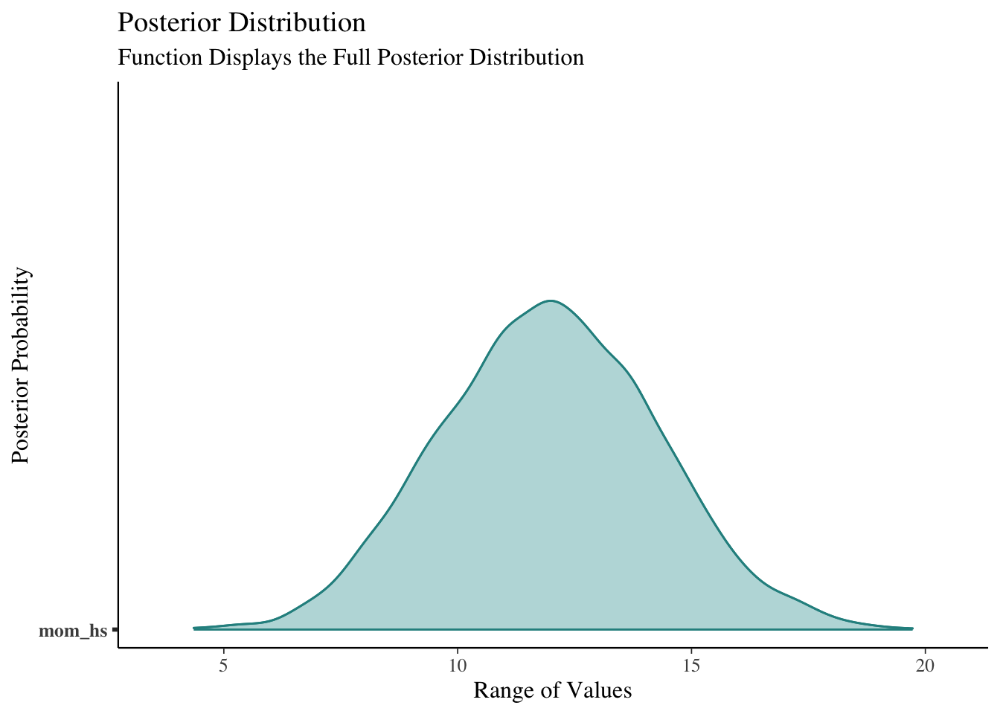
cowplot::plot_grid(function99, function101, ncol = 1, align = "v")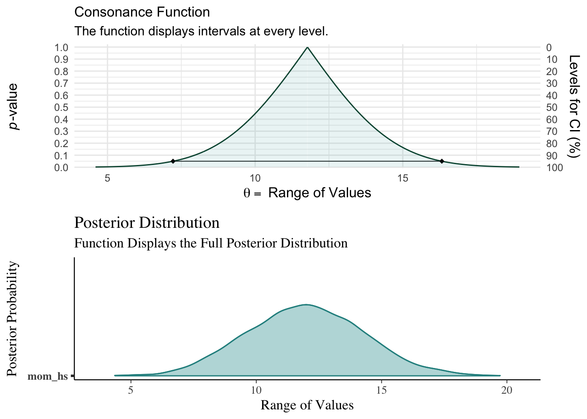